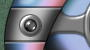

|  |
| ||||
| Welcome to the Vortex Interface, where you can access your one-stop resource for high-tech products for your home, such as the new line of self-driving hovercars, or appliances that run on the newly-standardized cubic foot fusion power plant. The six buttons on the interface allow you to do all this, with nifty animations for each link. |
| If there's anything this interface reminds me of, it's a weapon that a super hero might use to fling across the room, and have it beat up an escaping bad guy before returning to the thrower's hand. |
|
1. Using the Text tool, create the text for the section of the site that you want to animate. (If you are using Photoshop 5, convert this text layer to a regular one by choosing Layer»Type»Render Layer.) 2. Choose the kind of distortion effect you want to apply to your text, and determine the number of necessary frames. In the Vortex interface, I used the ZigZag distortion filter, with amounts of 2, 4, and 6 to produce 3 unique frames of animation. In this example, I'm going to use the Twirl filter to make an animation with 5 unique frames. So, now that I know I need 5 frames, I make 4 copies of the text layer, resulting in a total of 5 identical layers of text. On each text layer, I'll want to distort the text in slightly different ways, so that when the frames are animating, the text will appear to bend and wobble slightly. 3. For 5 frames of "twirling", I decided to have the twirl setting change by 10 degrees for each frame. So, I edited the layers to make frames for 10, 20, -10, and -20 degree twirls, leaving one of the frames untouched for the 0 degree frame. Below is what each individual layer looks like after running the Twirl filter on each: |
| -20 degrees: |  |
| -10 degrees: | |
| 0 degrees: | |
| 10 degrees: | |
| 20 degrees: |
|
4. At this point, I have the basic frames needed for an animation based on the Twirl filter. To make final touches to the animation, I used this page's background image, and inverted each layer, making the text white and more contrasting with the background. After each frame was put on its own layer, I saved the PSD and imported it into GIF Movie Gear, which can treat each layer as an individual frame. Because there is no built-in way in a GIF animation to loop by playing forward and then backward, I had to make copies of the middle 3 frames and put them at the end of the animation in reverse order. In other words, I set up the list of frames as follows: -20°, -10° 0°, 10°, 20°, 10°, 0°, -10°. After setting the frame delay to 1/10 of a second, optimizing, and saving, this was the result:
That's all there is to it! However, if you want to get a little more complicated with it, you can create the effect of a motion blur. When each frame of the animation is created, instead of hiding the other 4 text layers, the trick is to keep them visible while adjusting their opacities. The first frame I created was when the -20° twirl layer was on, and the others were off. For this variation, I kept them all on, but decreased the opacities for the layers as the twirl degree increased. The -10° frame had 40% opacity, the 0° frame had 30% opacity, 10° had 20%, and 20° had 10%. So, I call it the -20° frame, since the -20° layer has 100% opacity. Then, for the other frames, I make another layer 100% opacity and the others lower, giving the appearance of a wispy "fadeout". Below is the new GIF.
Remember that this effect can be used with many of the distortion filters, not just Twirl and ZigZag. Also, to save a little file size, you can make all of the area surrounding the animated text transparent, if the background is designed to align with your text. For example, the center image in the Vortex interface (where text is displayed) is really in the background. The animation only contains information about how the text animation should change with respect to the background. |
Included Generic Version